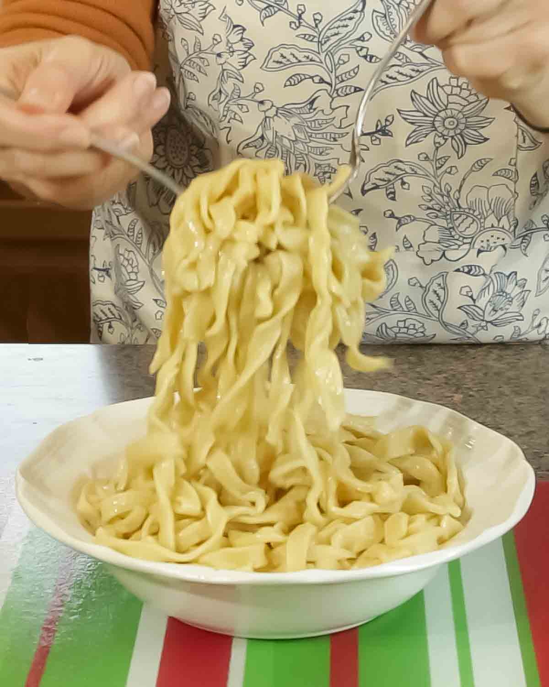

Noodles quck,easy to make and can be prepared under few mintues,it can also be prepared in nmutiple ways
This page is to show you how noodles can be prepared at home,simple and tasty
Ingredients
- 2 pack of noodles
- 3 cups of water
- 1 Egg(optional)
- 1 tablespoon of oil
- seasons from the pack of the noodles
Instructions
- Boil 3 cups of water
- Add the noodles into the boiling waater
- cook for 2-3 mintues
- pour out the excess water
- poue in abit of vegetable oil
- crack the egg into it and stir well
- pour in the noodles and stir well
- turn off and stir
finished Dish
